14店主 App（用手机查看您的门店）
不在店里也没关系。您的手机可以显示今天的销售额、现在哪些桌台有客人、日结报表和提醒。BrewDesk Owner 不是 App Store 里的应用，而是在手机浏览器中打开的网页应用；添加到主屏幕后，就像其他应用一样用图标打开。它没有密码：您用发送到邮箱的 6 位验证码登录。
在手机浏览器（iPhone 用 Safari，Android 用 Chrome）中打开 brewdesk.io/owner——也就是您收银机的网址后面加上 /owner。使用店主的邮箱登录，或使用店主邀请为管理员的邮箱登录。
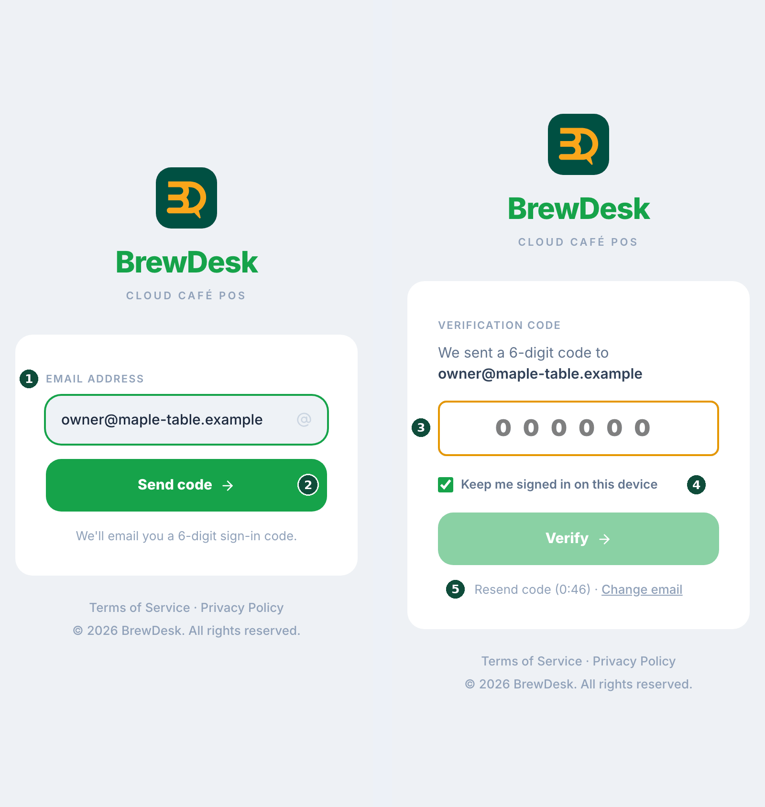
- 打开
brewdesk.io/owner。您会看到 BrewDesk 标志和一个邮箱输入框。 - 在 EMAIL ADDRESS（电子邮箱）下输入您门店账户的邮箱，然后点 Send code（发送验证码）。
- 在收件箱中找到 6 位验证码，输入到 VERIFICATION CODE（验证码）下，然后点 Verify（验证）。
- 在您自己的手机上，请保持 Keep me signed in on this device（在此设备上保持登录状态）开启——下次打开应用会直接进入，不需要验证码。在共用设备上请关闭它。
- 登录后：如果您只有一家门店，会直接打开它的仪表盘；如果有多家门店，会进入汇总所有门店的首页。
店主 App 主要用来随时查看您的门店。菜单、价格、员工 PIN 和设备设置仍然在收银机（POS）上修改。
添加到主屏幕
只需添加一次，以后就能通过图标打开 BrewDesk Owner，不必再输入网址。不需要 App Store。
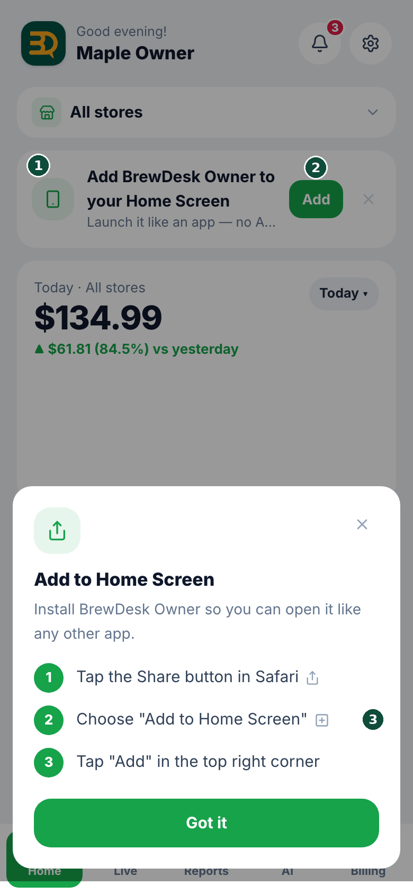
- Android（Chrome）：出现 Add BrewDesk Owner to your Home Screen（将 BrewDesk Owner 添加到主屏幕）横幅时，点 Add（添加）。
- iPhone（Safari）：按屏幕上的三步操作——点 Safari 的 Share（分享）按钮，选择 Add to Home Screen（添加到主屏幕），再点右上角的 Add（添加）。
- 把横幅关掉了？随时可以从齿轮（Settings（设置））→ Add to Home Screen (PWA)（添加到主屏幕（PWA））里重新调出来。
首页与门店仪表盘
首页让您一眼看清今天的情况。选一家门店即可打开它的仪表盘；屏幕每 15 秒自动刷新一次。适用于 Pro Business 套餐的门店。
底部标签 Home（首页）。如果有多家门店，点顶部附近的门店名称框，在 All stores（全部门店）和各家门店之间切换。
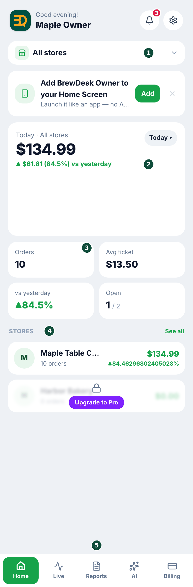
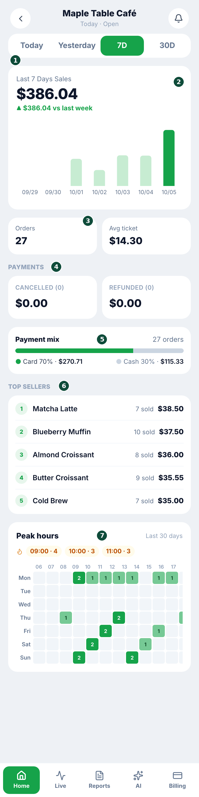
- 多家门店：首页显示 Today · All stores（今天 · 全部门店）的总销售额、与昨天同一时间相比的变化、订单数、Avg ticket（平均客单价）以及正在营业的门店数。点 Stores（门店）列表中的某家门店，即可打开它的仪表盘。
- 在仪表盘顶部选择时间段：Today（今天） · Yesterday（昨天） · 7D（7天） · 30D（30天）。与上一时间段相比的变化显示在销售额旁边。
- 图表可在 Hourly（按小时）和 Daily（按天）之间切换。
- 向下滑动可看到 Orders（订单） · Avg ticket（平均客单价）、Payments（支付，含取消、退款和小费）、Payment mix（支付方式占比，刷卡与现金）、Top Sellers（畅销商品）和 Peak hours（高峰时段，过去 30 天每天每个时段的繁忙程度）。
一天的正式数字以您在收银台生成的日结报表为准。仪表盘显示的是一天还在进行中的数据——关于如何日结，请参阅报表与日结。
实时——此刻正在发生什么
无论身在何处，都能看到已入座的桌台、进来的线上订单和今天的预订——有几项还能直接在手机上处理。
底部标签 Live（实时）。顶部的小标签取决于您门店开启了哪些附加功能：Dine-in（堂食）始终显示，开启扫码/线上点餐后显示 Online（线上），开启预订或排程后显示 Reservations（预订）（参见附加功能与扩展）。
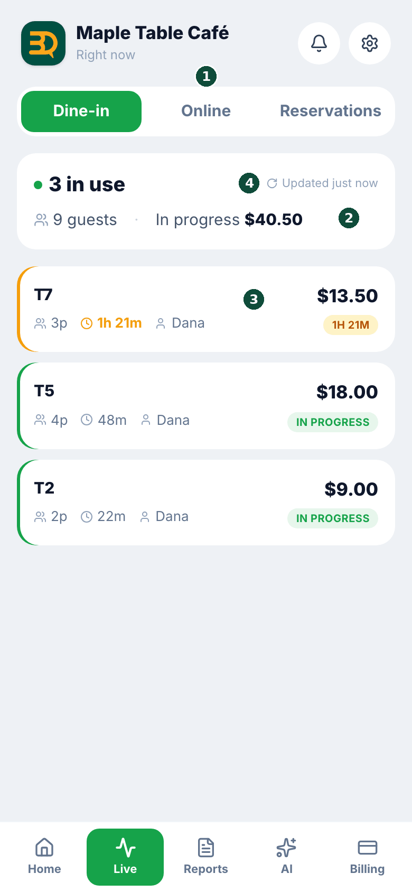
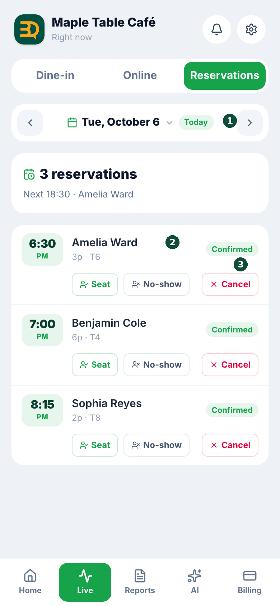
- Dine-in（堂食）：显示有多少桌、多少位客人，以及每桌已入座多久和当前累计金额。点一桌可查看订单内容。每 10 秒刷新一次。
- Online（线上）：自取、外卖和扫码订单，分为 New（新订单）和 Preparing（备餐中）。对新订单点 Accept（接受），顾客取走后点 Mark picked up（标记为已取餐）。
- Reservations（预订）：用日期栏在各天之间切换，或打开日历跳转到某个日期。已确认的预订带有 Seat（入座） · No-show（未到） · Cancel（取消）按钮。
报表与 AI 分析
您在收银台日结之后，日结报表也会出现在手机上——还有一份 AI 撰写的当日总结。
底部标签 Reports（报告）和 AI。如果有多家门店，请先在顶部的框里选好门店。
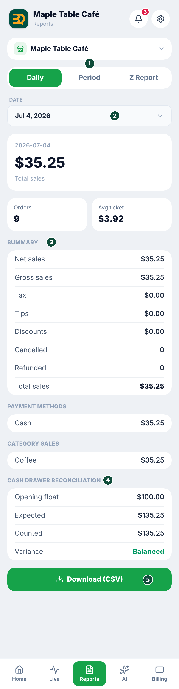
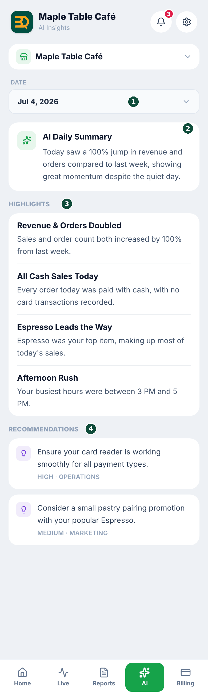
- Daily（每日）：选择一个日期，打开当天的日结报表——总销售额和净销售额、税费、小费、折扣、订单数和平均客单价、取消与退款、各支付方式的金额、各分类的销售额，以及是谁日结的（Closed by（结账人））。
- 在同一屏幕上，Cash drawer reconciliation（现金抽屉核对）显示开店备用金、应有金额、清点金额和差额：Balanced（已平衡）、Over（超出）或 Short（短缺）。参见钱箱。
- Period（按期间）：设置 From（起始）和 To（结束），查看这段时间内已日结各天的总计和逐日列表。
- Z Report（Z 报告）：与您的收银台打印的 Z 报表内容相同，按日期查看。
- 点底部的 Download (CSV)（下载（CSV）），可把当前查看的报告保存为 CSV 文件，用 Excel 打开。
- AI 标签默认打开您最近一个已日结的日子：Summary（摘要）、Highlights（要点）、Recommendations（建议）和 Alerts（提醒）。更改日期即可阅读更早的分析。
AI 分析属于 Pro 及以上套餐包含的 AI 智能洞察。如果要一次导出多天的数据，请在收银台使用导出销售数据。
提醒与邮件链接
您需要知道的事——付款失败、订阅变更、退款、被搁置的日结、新的 AI 洞察——都会汇集到应用的提醒收件箱里。而 BrewDesk 报表和提醒邮件中的按钮，会在店主 App 里打开对应的页面。
右上角的铃铛图标（Alerts（提醒））。铃铛上的数字表示未读提醒的数量。
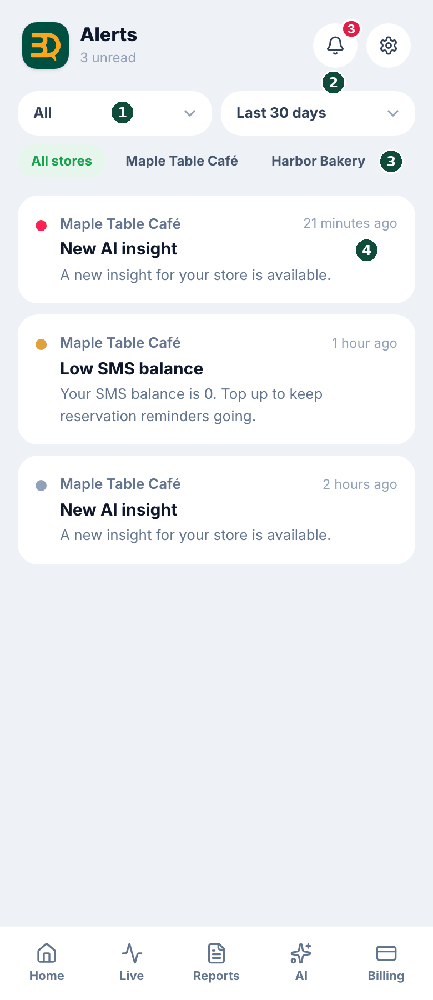
- 在 All（全部）和 Unread（未读）之间切换。
- 按时间段（Today（今天） · Last 7 days（近 7 天） · Last 30 days（近 30 天））和门店（All stores（全部门店）或某一家门店）缩小范围。
- 点一条提醒即标记为已读；铃铛上的数字会减少。
邮件链接就像进入您门店页面的钥匙。请不要把这些邮件转发给任何人。
账单、套餐与消息充值
更改套餐、管理已保存的银行卡、为短信和 WhatsApp 消息充值、查看最近的付款——全都可以在手机上完成。仅限店主：以经理身份登录时，不会显示这个标签。
底部标签 Billing（账单）。如果有多家门店，会先看到所有门店的账单；点某家门店的 Manage（管理）即可打开它。只有一家门店时会直接打开。
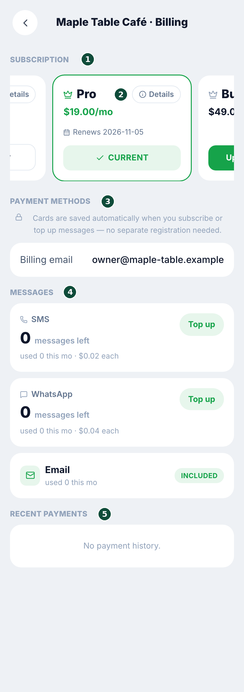
- 在 Subscription（订阅）下查看您当前的套餐和续订日期。点某个套餐的 Details（详情），可以看它包含什么。
- 要更改套餐，请点您想要的套餐上的 Upgrade to …（升级到…）或 Switch to …（切换到…）。会打开安全的支付页面（Stripe），在那里完成即可。
- Payment methods（支付方式）列出您已保存的银行卡。订阅或充值时会自动保存卡信息，所以这里无需添加——您只能移除（Remove（移除））不再需要的卡。
- 在 Messages（消息）下，可以看到剩余多少条短信和 WhatsApp 消息、本月已用多少条，然后点 Top up（充值）。金额在支付页面上选择，您还可以开启 Auto top-up，余额不足时自动补充。
- Recent payments（最近的付款）列出您过去的扣款。
关于各套餐的区别和免费试用，请参阅您的套餐与账单；关于消息的使用，请参阅向顾客发送消息。
管理员、安装合作伙伴与客服
不用到店里，您就可以让经理使用店主 App、切断某个安装合作伙伴的权限，或联系客服。
右上角的齿轮（Settings（设置））→ 在 Store（门店）下：Manage store (admins & permissions)（管理门店（管理员与权限））和 Installer partners。这两行只对该门店的店主显示。
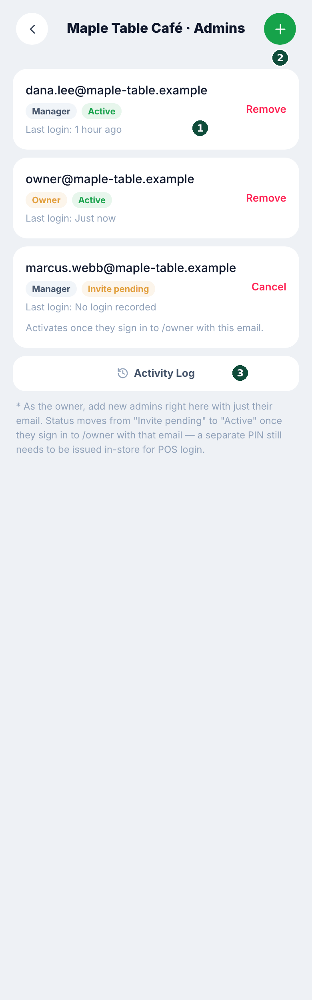
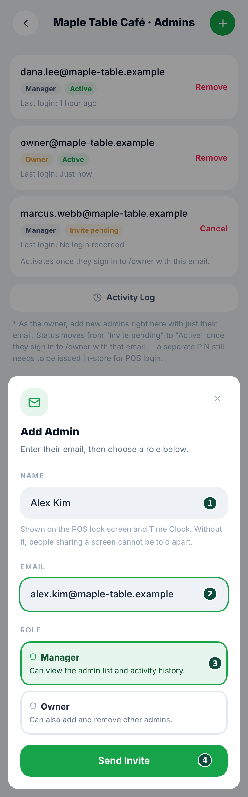
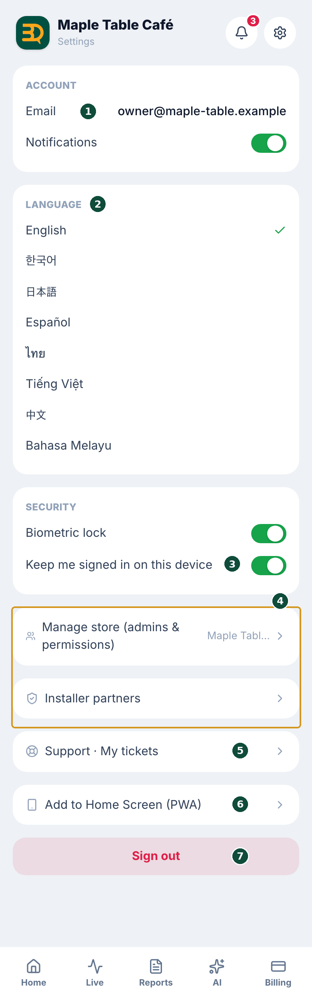
- 点 Add Admin（添加管理员），填写 Name（姓名）、Email（邮箱）和 Role（角色），然后点 Send Invite（发送邀请）。角色可以是 Manager（经理，可以查看管理员列表和活动记录）或 Owner（店主，还可以添加和移除管理员）。
- 被邀请的人用该邮箱登录
brewdesk.io/owner后，状态会从 Invite pending（邀请待处理）变为 Active（已生效）。 - 要移除某人，点他名字旁边的 Remove（移除）并确认。您不能移除自己，也不能移除门店的最后一位店主。
- Activity Log（活动记录）会显示管理员的邀请与移除、角色变更、店主 App 登录、收银台登录，以及 PIN 的创建或修改。
- Installer partners 会显示当前连接的合作伙伴，以及他们最近一次访问您门店的时间。点 Disconnect 即切断他们的访问权限；会先弹出一个面板说明将会发生什么，点 Keep connected 可以退出。
- 需要帮助时，打开 Support · My tickets（支持 · 我的工单），点 New inquiry（新建问题）。选择门店和类型（问题反馈、功能建议或其他），填写主题和内容后发送。回复会出现在同一屏幕上，方便您继续沟通。这与收银台上的客服是同一份工单列表。
关于安装合作伙伴连接的含义，请参阅安装合作伙伴。用完之后，Sign out（退出登录）在设置页面的底部。